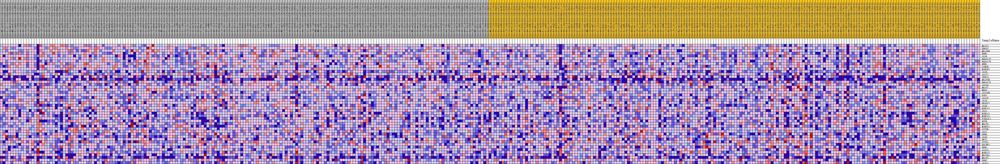
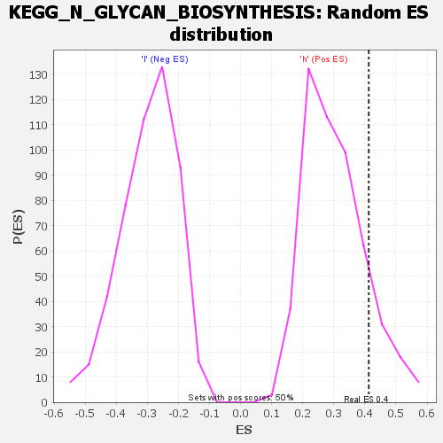

| | | Dataset | VCAN.VCAN.cls#h_versus_l.VCAN.cls#h_versus_l_repos |
| Phenotype | VCAN.cls#h_versus_l_repos |
| Upregulated in class | h |
| GeneSet | KEGG_N_GLYCAN_BIOSYNTHESIS |
| Enrichment Score (ES) | 0.41237304 |
| Normalized Enrichment Score (NES) | 1.3611822 |
| Nominal p-value | 0.13121273 |
| FDR q-value | 1.0 |
| FWER p-Value | 0.909 |
Table: GSEA Results Summary
 Fig 1: Enrichment plot: KEGG_N_GLYCAN_BIOSYNTHESIS
Fig 1: Enrichment plot: KEGG_N_GLYCAN_BIOSYNTHESIS
Profile of the Running ES Score & Positions of GeneSet Members on the Rank Ordered List
| SYMBOL | TITLE | RANK IN GENE LIST | RANK METRIC SCORE | RUNNING ES | CORE ENRICHMENT | | 1 | MGAT1 | na | 21 | 0.164 | 0.0854 | Yes |
| 2 | DDOST | na | 383 | 0.117 | 0.1399 | Yes |
| 3 | MGAT4B | na | 821 | 0.101 | 0.1850 | Yes |
| 4 | RPN2 | na | 1216 | 0.093 | 0.2265 | Yes |
| 5 | ALG8 | na | 3028 | 0.071 | 0.2310 | Yes |
| 6 | B4GALT2 | na | 3232 | 0.070 | 0.2638 | Yes |
| 7 | B4GALT3 | na | 3854 | 0.065 | 0.2864 | Yes |
| 8 | RPN1 | na | 3953 | 0.064 | 0.3180 | Yes |
| 9 | GANAB | na | 4644 | 0.059 | 0.3363 | Yes |
| 10 | MAN1B1 | na | 5372 | 0.054 | 0.3516 | Yes |
| 11 | ALG9 | na | 5830 | 0.051 | 0.3702 | Yes |
| 12 | ALG12 | na | 7012 | 0.045 | 0.3724 | Yes |
| 13 | TUSC3 | na | 7318 | 0.044 | 0.3898 | Yes |
| 14 | MGAT5B | na | 8914 | 0.036 | 0.3796 | Yes |
| 15 | B4GALT1 | na | 9338 | 0.034 | 0.3896 | Yes |
| 16 | ALG14 | na | 9514 | 0.033 | 0.4037 | Yes |
| 17 | MGAT2 | na | 9952 | 0.031 | 0.4120 | Yes |
| 18 | MOGS | na | 10734 | 0.028 | 0.4124 | Yes |
| 19 | ALG10B | na | 12375 | 0.021 | 0.3936 | No |
| 20 | DAD1 | na | 13185 | 0.018 | 0.3883 | No |
| 21 | ALG10 | na | 13200 | 0.018 | 0.3974 | No |
| 22 | ALG3 | na | 15042 | 0.011 | 0.3699 | No |
| 23 | DPAGT1 | na | 15472 | 0.010 | 0.3673 | No |
| 24 | ALG6 | na | 16808 | 0.006 | 0.3461 | No |
| 25 | MAN2A2 | na | 17031 | 0.005 | 0.3447 | No |
| 26 | ALG1 | na | 18173 | 0.002 | 0.3250 | No |
| 27 | MAN1A1 | na | 22154 | -0.003 | 0.2545 | No |
| 28 | MAN2A1 | na | 22217 | -0.003 | 0.2551 | No |
| 29 | ST6GAL1 | na | 23430 | -0.007 | 0.2367 | No |
| 30 | FUT8 | na | 23435 | -0.007 | 0.2400 | No |
| 31 | MGAT5 | na | 25509 | -0.012 | 0.2089 | No |
| 32 | MAN1C1 | na | 25575 | -0.012 | 0.2142 | No |
| 33 | STT3B | na | 27506 | -0.018 | 0.1886 | No |
| 34 | ALG2 | na | 29505 | -0.023 | 0.1646 | No |
| 35 | DPM3 | na | 29610 | -0.024 | 0.1750 | No |
| 36 | ALG5 | na | 30355 | -0.026 | 0.1750 | No |
| 37 | RFT1 | na | 30407 | -0.026 | 0.1876 | No |
| 38 | STT3A | na | 30488 | -0.026 | 0.1997 | No |
| 39 | DOLPP1 | na | 33226 | -0.034 | 0.1677 | No |
| 40 | DPM1 | na | 36984 | -0.043 | 0.1225 | No |
| 41 | ALG13 | na | 37653 | -0.045 | 0.1341 | No |
| 42 | MAN1A2 | na | 37803 | -0.046 | 0.1553 | No |
| 43 | MGAT4A | na | 41347 | -0.055 | 0.1200 | No |
| 44 | MGAT3 | na | 43677 | -0.062 | 0.1103 | No |
| 45 | DPM2 | na | 49739 | -0.082 | 0.0437 | No |
| 46 | ALG11 | na | 53642 | -0.108 | 0.0294 | No |
Table: GSEA details [plain text format]

Fig 2: KEGG_N_GLYCAN_BIOSYNTHESIS
Blue-Pink O' Gram in the Space of the Analyzed GeneSet

Fig 3: KEGG_N_GLYCAN_BIOSYNTHESIS: Random ES distribution
Gene set null distribution of ES for KEGG_N_GLYCAN_BIOSYNTHESIS